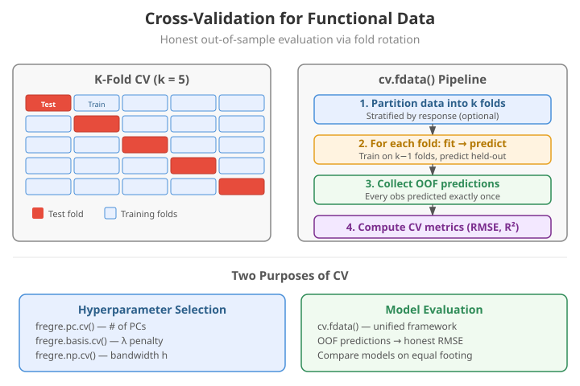
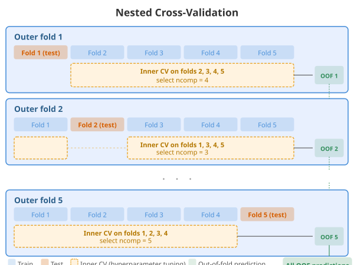
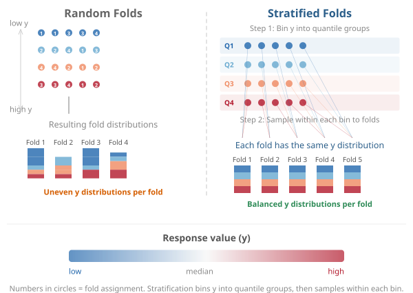
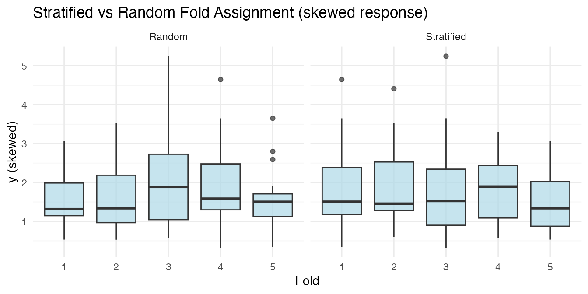
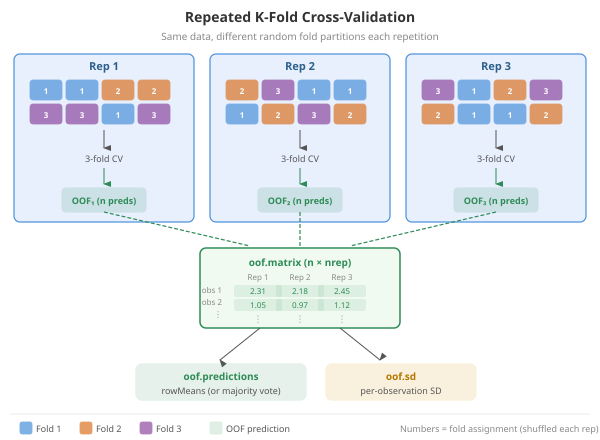
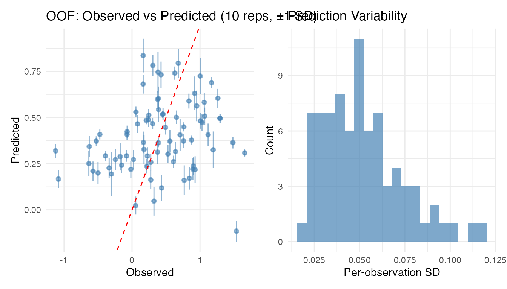
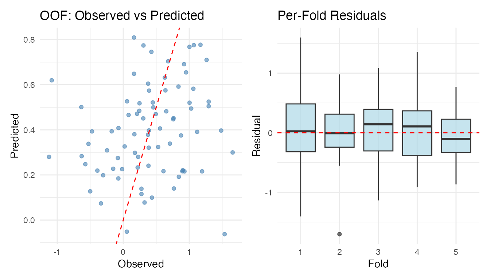
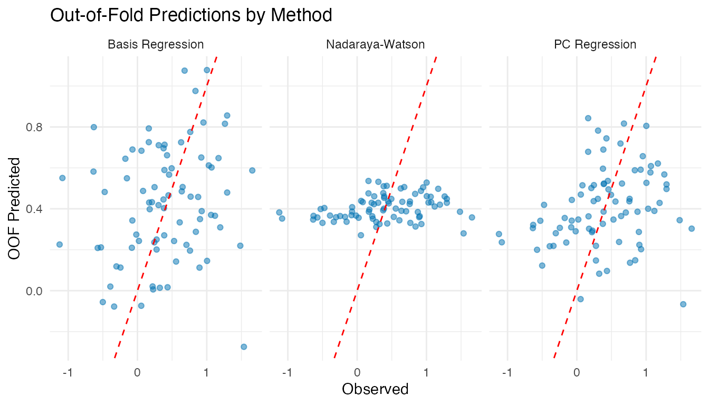

Cross-Validation for Functional Data
Source:vignettes/articles/cross-validation.Rmd
cross-validation.RmdWhy Cross-Validation?
A model’s training error is always optimistic: it measures how well the model fits data it has already seen, not how well it will predict new observations. Cross-validation (CV) provides an honest estimate of out-of-sample performance by systematically holding out portions of the data for evaluation.
In functional data analysis, cross-validation serves two purposes:
- Hyperparameter selection — choosing the number of principal components, the regularization parameter , or the bandwidth
- Model evaluation — estimating how well a fitted model will perform on new functional observations
The existing *.cv functions in fdars
(fregre.pc.cv, fregre.basis.cv,
fregre.np.cv) handle purpose (1). The
cv.fdata() function provides a unified framework for both,
producing out-of-fold (OOF) predictions where every
observation is predicted exactly once.

K-Fold Cross-Validation
In -fold CV, the dataset of observations is partitioned into roughly equal-sized folds. For each fold :
- Hold out fold as the test set
- Train the model on the remaining folds
- Predict on the held-out fold
where is the set of indices in fold , is the prediction for observation from the model trained without fold , and is a loss function (e.g., squared error).
The key property: every observation is predicted exactly once, when it is in the test fold. The resulting predictions are called out-of-fold (OOF) predictions.
Choosing
| Name | Bias | Variance | Cost | |
|---|---|---|---|---|
| Leave-one-out (LOO) | Low | High | model fits | |
| 10 | 10-fold (standard) | Moderate | Moderate | 10 model fits |
| 5 | 5-fold | Higher | Lower | 5 model fits |
In practice,
or
provides a good bias-variance tradeoff. LOO is used by the
hat-matrix-based *.cv functions for linear methods where it
can be computed efficiently.
Simple Example
set.seed(42)
n <- 80
m <- 50
t_grid <- seq(0, 1, length.out = m)
X <- matrix(0, n, m)
for (i in 1:n) {
X[i, ] <- sin(2 * pi * t_grid) * rnorm(1, 1, 0.3) +
cos(4 * pi * t_grid) * rnorm(1, 0, 0.2) +
rnorm(m, sd = 0.1)
}
fd <- fdata(X, argvals = t_grid)
beta_true <- sin(2 * pi * t_grid)
y <- numeric(n)
for (i in 1:n) {
y[i] <- sum(beta_true * X[i, ]) / m + rnorm(1, sd = 0.5)
}Running cv.fdata
The interface is simple: pass any fitting function and
cv.fdata handles the fold loop.
cv_result <- cv.fdata(fd, y,
fit.fn = function(fd, y, ...) fregre.pc(fd, y, ncomp = 3),
kfold = 5, seed = 42)
print(cv_result)
#> K-Fold Cross-Validation (cv.fdata)
#> Type: regression
#> Folds: 5
#> Observations: 80
#>
#> Overall metrics:
#> RMSE: 0.5696
#> MAE: 0.4576
#> R2: 0.05461
#>
#> Per-fold RMSE range: [0.4716, 0.6933]The return value contains:
-
$oof.predictions— one prediction per observation (length ) -
$folds— which fold each observation belongs to -
$fold.models— the fitted model from each fold -
$metrics— overall RMSE, MAE, R2 -
$fold.metrics— per-fold metrics
Nested Cross-Validation
When a model has hyperparameters that are themselves selected by cross-validation, a single level of CV is not enough for unbiased evaluation. The hyperparameter selection uses information from the test fold (indirectly), leading to optimistic error estimates.
Nested CV separates these two tasks:
- Outer loop ( folds): produces OOF predictions for evaluation
- Inner loop ( folds, on training data only): selects hyperparameters

With cv.fdata, nested CV is achieved by putting the
existing *.cv function inside fit.fn:
cv_nested <- cv.fdata(fd, y,
fit.fn = function(fd, y, ...) {
# Inner CV selects optimal ncomp on training data only
cv_inner <- fregre.pc.cv(fd, y, ncomp.range = 1:10, kfold = 5)
cv_inner$model
},
kfold = 5, seed = 42)
print(cv_nested)
#> K-Fold Cross-Validation (cv.fdata)
#> Type: regression
#> Folds: 5
#> Observations: 80
#>
#> Overall metrics:
#> RMSE: 0.5766
#> MAE: 0.447
#> R2: 0.03126
#>
#> Per-fold RMSE range: [0.4592, 0.6934]The hyperparameter selected can vary across outer folds — this is expected and desirable, as it reflects genuine uncertainty:
Stratified Folds
When the response distribution is skewed or has outliers, purely random fold assignment can create folds with very different distributions. This adds noise to the CV estimate.
Stratified fold assignment bins the response into quantile groups and samples within each bin, ensuring every fold has a similar distribution.

cv.fdata uses stratified folds by default
(stratified = TRUE).
# Skewed response
set.seed(1)
y_skew <- exp(y)
folds_strat <- fdars::: .create_folds(y_skew, kfold = 5, type = "regression",
stratified = TRUE, seed = 1)
folds_rand <- fdars::: .create_folds(y_skew, kfold = 5, type = "regression",
stratified = FALSE, seed = 1)
df_folds <- data.frame(
y = rep(y_skew, 2),
Fold = factor(c(folds_strat, folds_rand)),
Type = rep(c("Stratified", "Random"), each = n)
)
ggplot(df_folds, aes(x = Fold, y = y)) +
geom_boxplot(fill = "lightblue", alpha = 0.7) +
facet_wrap(~ Type) +
labs(title = "Stratified vs Random Fold Assignment (skewed response)",
y = "y (skewed)")
For classification, stratification preserves class proportions in each fold.
Repeated Cross-Validation
A single k-fold split can produce noisy estimates — different random partitions can give different OOF predictions and metrics. Repeated cross-validation runs the entire k-fold procedure multiple times with different random fold assignments, giving each observation multiple predictions.
This lets you assess prediction variability: how much a prediction changes depending on which observations happen to be in its training set.

cv_rep <- cv.fdata(fd, y,
fit.fn = function(fd, y, ...) fregre.pc(fd, y, ncomp = 3),
kfold = 5, nrep = 10, seed = 42)
print(cv_rep)
#> Repeated K-Fold Cross-Validation (cv.fdata)
#> Type: regression
#> Folds: 5 × 10 repetitions (50 total fits)
#> Observations: 80
#>
#> Aggregated metrics (on mean predictions):
#> RMSE: 0.5735
#> MAE: 0.4626
#> R2: 0.04151
#>
#> Per-repetition metrics (mean ± sd):
#> RMSE: 0.5759 ± 0.008866
#> MAE: 0.4634 ± 0.00754
#> R2: 0.03324 ± 0.02977
#>
#> Prediction variability:
#> Mean per-observation SD: 0.05172
#> Max per-observation SD: 0.1175The $oof.matrix contains the raw predictions from each
repetition (an
matrix), while $oof.predictions contains the aggregated
(mean) predictions. The $oof.sd vector gives the standard
deviation of predictions across repetitions for each observation.
# Observations with highest prediction variability
top_var <- head(sort(cv_rep$oof.sd, decreasing = TRUE))
cat("Top 6 per-observation SDs:\n")
#> Top 6 per-observation SDs:
print(round(top_var, 4))
#> [1] 0.1175 0.1099 0.0993 0.0988 0.0914 0.0914
# Per-repetition metrics
knitr::kable(cv_rep$rep.metrics, digits = 4,
caption = "Metrics across 10 repetitions")| rep | RMSE | MAE | R2 |
|---|---|---|---|
| 1 | 0.5838 | 0.4692 | 0.0070 |
| 2 | 0.5868 | 0.4694 | -0.0035 |
| 3 | 0.5652 | 0.4551 | 0.0693 |
| 4 | 0.5696 | 0.4567 | 0.0547 |
| 5 | 0.5740 | 0.4610 | 0.0400 |
| 6 | 0.5858 | 0.4725 | 0.0002 |
| 7 | 0.5754 | 0.4641 | 0.0354 |
| 8 | 0.5655 | 0.4529 | 0.0681 |
| 9 | 0.5677 | 0.4591 | 0.0608 |
| 10 | 0.5857 | 0.4739 | 0.0005 |
The plot method for repeated CV shows error bars
(
SD) on the observed-vs-predicted scatter, plus a histogram of prediction
variability:
plot(cv_rep)
High per-observation variability can flag influential observations or regions of the predictor space where the model is unstable.
Comparing Methods Fairly
A key advantage of cv.fdata is that it allows
fair comparisons between methods by fixing the fold
assignments with the seed parameter. When two methods use
the same seed, they are evaluated on identical train/test splits,
removing a source of variability.
cv_pc <- cv.fdata(fd, y,
fit.fn = function(fd, y, ...) fregre.pc(fd, y, ncomp = 3),
kfold = 5, seed = 42)
cv_basis <- cv.fdata(fd, y,
fit.fn = function(fd, y, ...) fregre.basis(fd, y, nbasis = 11, lambda = 1),
kfold = 5, seed = 42)
cv_np <- cv.fdata(fd, y,
fit.fn = function(fd, y, ...) fregre.np(fd, y, type.S = "S.NW"),
kfold = 5, seed = 42)
comparison <- data.frame(
Method = c("PC Regression", "Basis Regression", "Nadaraya-Watson"),
RMSE = round(c(cv_pc$metrics$RMSE, cv_basis$metrics$RMSE,
cv_np$metrics$RMSE), 4),
MAE = round(c(cv_pc$metrics$MAE, cv_basis$metrics$MAE,
cv_np$metrics$MAE), 4),
R2 = round(c(cv_pc$metrics$R2, cv_basis$metrics$R2,
cv_np$metrics$R2), 4)
)
knitr::kable(comparison, caption = "5-fold OOF performance (same folds)")| Method | RMSE | MAE | R2 |
|---|---|---|---|
| PC Regression | 0.5696 | 0.4576 | 0.0546 |
| Basis Regression | 0.5986 | 0.4644 | -0.0441 |
| Nadaraya-Watson | 0.5727 | 0.4537 | 0.0444 |
Per-Fold Stability
Large variation in per-fold metrics can indicate:
- Small sample size — not enough data for stable estimates
- Outliers — one fold contains unusual observations
- Model sensitivity — the method is fragile to small data changes
knitr::kable(cv_nested$fold.metrics, digits = 4,
caption = "Per-fold metrics (nested CV)")| fold | n | RMSE | MAE | R2 |
|---|---|---|---|---|
| 1 | 17 | 0.6934 | 0.5560 | -0.0608 |
| 2 | 17 | 0.5794 | 0.4139 | -0.0367 |
| 3 | 17 | 0.5229 | 0.4219 | 0.1499 |
| 4 | 15 | 0.5839 | 0.4614 | 0.0077 |
| 5 | 14 | 0.4592 | 0.3696 | 0.1610 |
Visualising Results
The plot method for cv.fdata objects
produces observed-vs-predicted and per-fold residual boxplots:
plot(cv_nested)
For multi-method comparison, build a ggplot directly:
df_oof <- data.frame(
Observed = rep(y, 3),
Predicted = c(cv_pc$oof.predictions, cv_basis$oof.predictions,
cv_np$oof.predictions),
Method = rep(c("PC Regression", "Basis Regression", "Nadaraya-Watson"),
each = n)
)
ggplot(df_oof, aes(x = Observed, y = Predicted)) +
geom_point(alpha = 0.5, colour = "#0072B2") +
geom_abline(intercept = 0, slope = 1, linetype = "dashed", colour = "red") +
facet_wrap(~ Method) +
labs(title = "Out-of-Fold Predictions by Method",
x = "Observed", y = "OOF Predicted")
Custom Predict Functions
By default, cv.fdata calls
predict(model, newdata). For models that need a different
prediction interface, pass a predict.fn:
cv_custom <- cv.fdata(fd, y,
fit.fn = function(fd, y, ...) fregre.basis(fd, y, nbasis = 11, lambda = 0.1),
predict.fn = function(model, newdata) predict(model, newdata),
kfold = 5, seed = 42)
cat("RMSE:", round(cv_custom$metrics$RMSE, 4), "\n")
#> RMSE: 0.8189This is especially useful for classification models (like
fclassif) that may not have a standard predict
method.
Classification
cv.fdata supports classification when y is
a factor. Fold stratification preserves class proportions, and metrics
include accuracy and a confusion matrix.
# Binary classification from the simulated data
y_class <- factor(ifelse(y > median(y), "high", "low"))
cv_classif <- cv.fdata(fd, y_class,
fit.fn = function(fd, y, ...) {
fregre.pc(fd, as.numeric(y), ncomp = 3)
},
predict.fn = function(model, newdata) {
preds <- predict(model, newdata)
ifelse(preds > 1.5, "high", "low")
},
kfold = 5, seed = 42)
cat("Accuracy:", round(cv_classif$metrics$accuracy, 3), "\n")
#> Accuracy: 0.388
cv_classif$metrics$confusion
#> Actual
#> Predicted high low
#> high 16 25
#> low 24 15Relationship to Existing *.cv Functions
| Function | Purpose | Inner tuning | OOF predictions |
|---|---|---|---|
fregre.pc.cv |
Select optimal ncomp
|
LOO or k-fold | No |
fregre.basis.cv |
Select optimal lambda
|
LOO or k-fold | No |
fregre.np.cv |
Select optimal h
|
LOO or k-fold | No |
fregre.lm.cv |
Select optimal k
|
k-fold | No |
fclassif.cv |
Select optimal ncomp
|
LOO or k-fold | No |
cv.fdata |
Evaluate any model | Via fit.fn |
Yes |
Use *.cv functions inside
cv.fdata’s fit.fn for proper nested CV.
Summary
-
cv.fdatawraps any fit/predict workflow in a k-fold CV loop - OOF predictions give honest generalisation estimates — each observation predicted exactly once
-
Nested CV =
cv.fdata(outer) +*.cv(inner) → unbiased evaluation with automatic tuning - Stratified folds (default) ensure balanced distribution
- Same seed → same folds → fair method comparison
-
$fold.modelslets you inspect per-fold hyperparameters
See Also
-
vignette("articles/scalar-on-function")— scalar-on-function regression methods -
vignette("articles/example-cross-validation")— real-data example with Tecator NIR spectra -
vignette("articles/functional-classification")— classification methods